Instalasi Software Pendukung
Windows 8 dan 10
Install Microsoft .Net Framework
Pertama, install Microsoft .Net Framework sebagai berikut:
- Cari file Microsoft .Net Framework yang sudah Anda download. Jika belum download silahkan download dahulu disini.
- Klik 2x pada file Microsoft .Net Framework, akan muncul jendela seperti di bawah pilih I have read and ACCEPT the terms of the License Agreement. Kemudian klik Install.

- Instalasi sukses, klik Exit.

Install Microsoft SQL Server Express
Kedua, install Microsoft SQL Server Express sebagai berikut:
- Cari file Microsoft SQL Server Express yang sudah Anda download. Jika belum download silahkan download dahulu disini.
- Klik 2x pada file Microsoft SQL Server Express, dan kemudian klik New SQL Server stand-alone installation or add features to an existing installation:
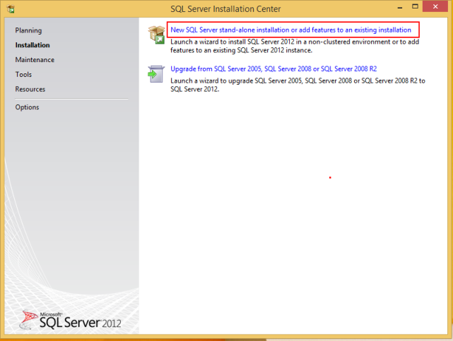 - Centang CheckBox I accept the license terms, dan kemudian klik Next.


- Klik Next.
 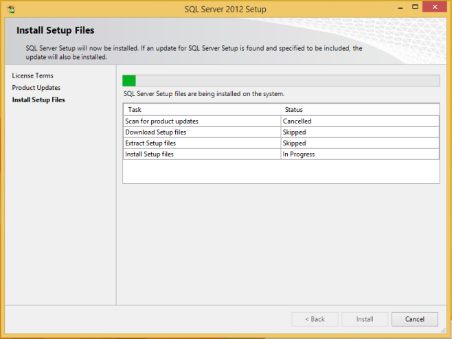
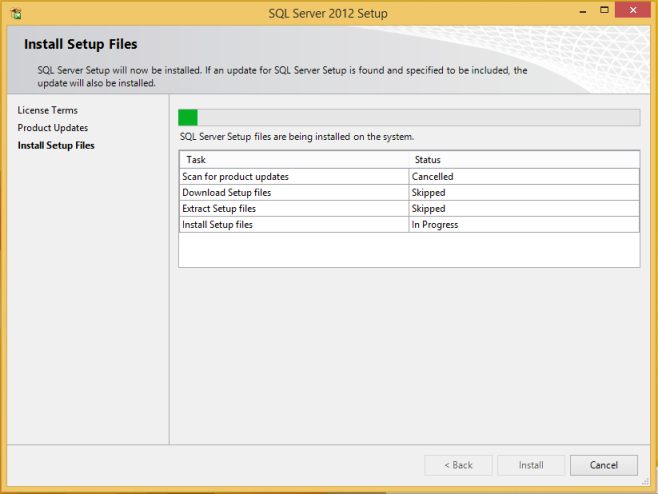
- Klik Next.

- Klik Next.
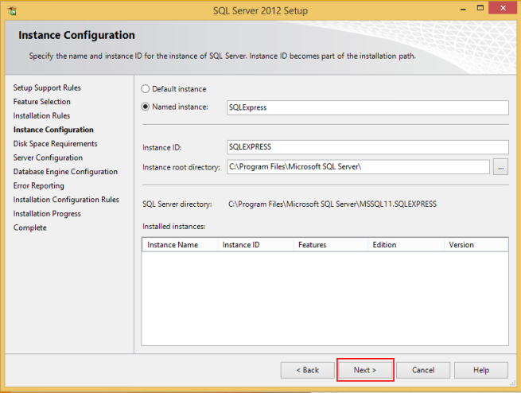 - Klik Next.

- Klik Next.
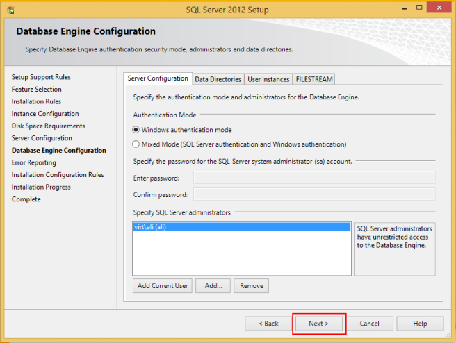 - Klik Next.
 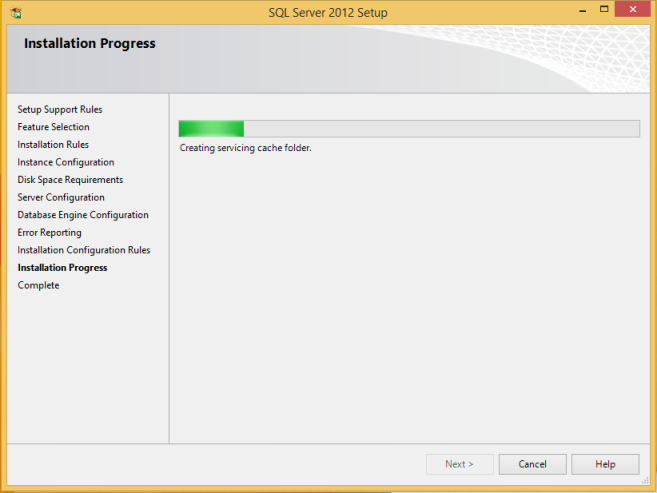
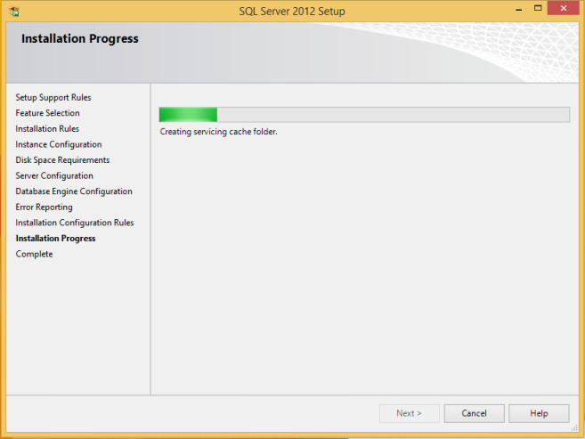
- Install sukses, klik Close.

- Klik icon close.
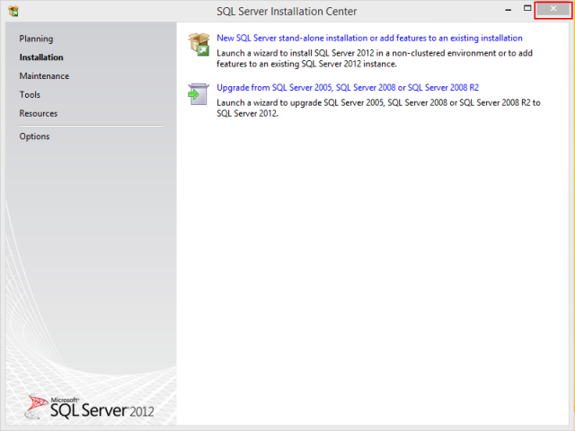
Install Microsoft SQL Server Management Studio Express
Ketiga, install Microsoft SQL Server Management Studio Express sebagai berikut:
- Cari file Microsoft SQL Server Management Studio Express yang sudah Anda download. Jika belum download silahkan download dahulu disini.
- Klik 2x file Microsoft SQL Server Management Studio Express.
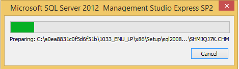 - Klik New SQL Server stand-alone installation or add features to an existing installation:
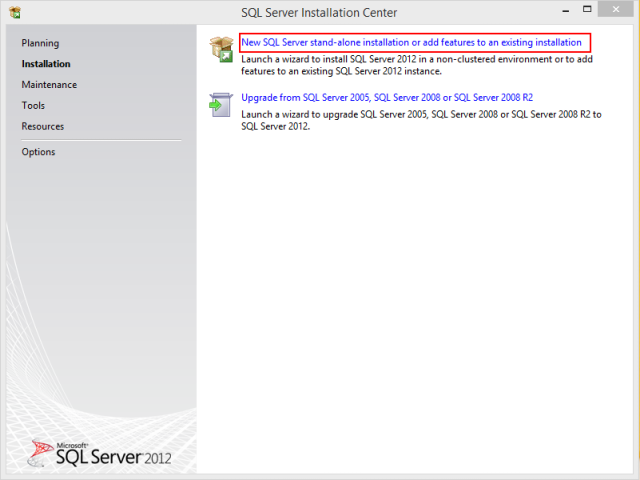
- Klik Next.

- Klik Next.

- Centang CheckBox I accept the license terms, dan kemudian klik Next.
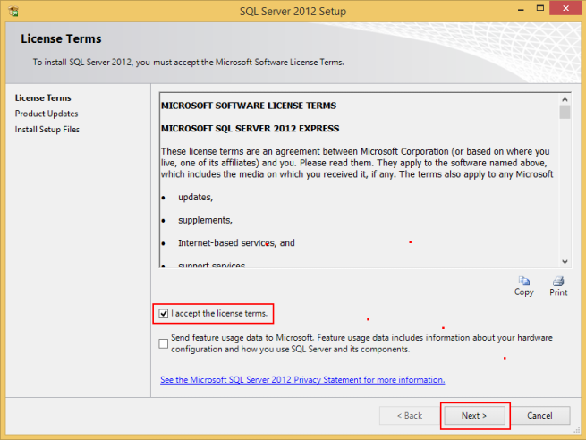 - Klik Next.

- Klik Next.
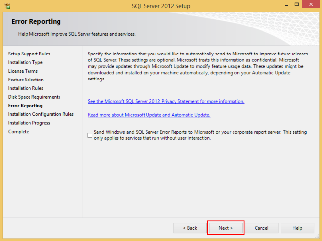
- Install sukses, klik Close.

- Klik icon close.

Selesai
Selanjutnya install Sotware OtomaX Free Edition.
Catatan: Tata cara di atas berlaku untuk Windows 8/10 32 bit maupun 64 bit.